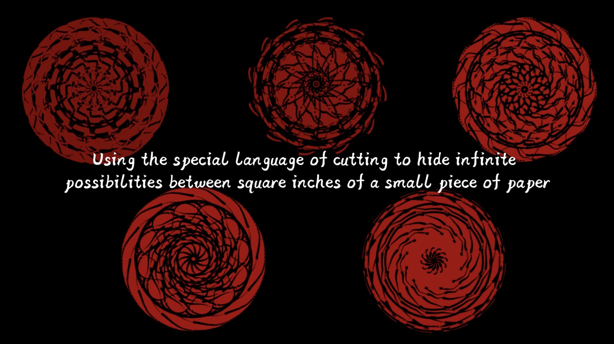
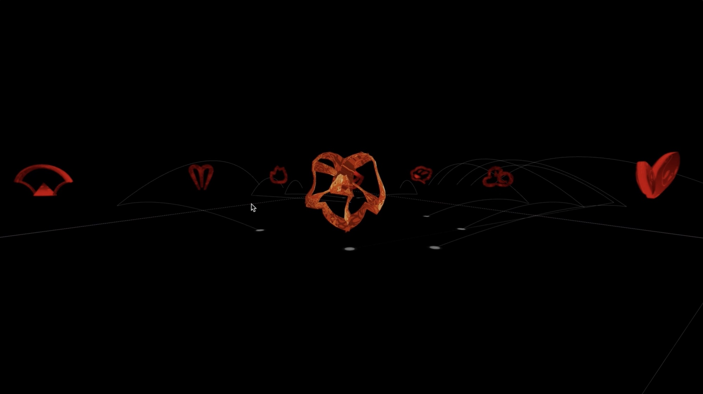
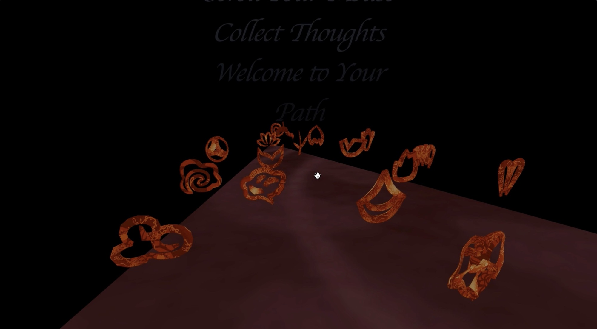

<div id="portfolio-page" class="portfolio-page-content">
    <div class="container">
        <div class="portfolio-nav">
            <div id="portfolio-close-button" class="portfolio-close-button"><a href="#portfolio"><i
                        class="fa fa-close"></i></a></div>
        </div>
        <div class="portfolio-title text-center">
            <h1>纸迹思韵 Path: A Ritual for Paper-cut</h1>
        </div>
        <div class="row">
            <div class="col-sm-7 col-md-7 portfolio-block">
                <div class="owl-carousel portfolio-page-carousel">
                    <div class="item"></div>
                    <div class="item"></div>
                    <div class="item"></div>
                </div>
                <div class="portfolio-page-video embed-responsive embed-responsive-16by9">
                        <iframe class="embed-responsive-item" src="https://player.vimeo.com/video/735315203?h=9e5a184b31" width="640" height="564" frameborder="0"></iframe>
                        <!-- allow="autoplay; fullscreen" allowfullscreen -->
                </div><!-- <div class="portfolio-page-image"></div>-->
                <script
                    type="text/javascript">jQuery(document).ready(function ($) { $('.portfolio-page-carousel').owlCarousel({ smartSpeed: 1200, items: 1, loop: true, dots: true, nav: true, navText: false, margin: 10 }) });</script>
                <!-- Tags -->
                <div class="tags-block">
                    <!-- <div class="block-title">
                        <h3>Tags</h3>
                    </div> -->
                    <ul class="tags">
                        <li><a>VirtualExperience</a></li>
                        <li><a>3DWebSpace</a></li>
                        <li><a>ChinesePaperCutting</a></li>
                        <li><a>CulturalHeritage</a></li>
                        <li><a>WebGL</a></li>
                    </ul>
                </div><!-- /Tags -->
                <br>
                <ul class="project-general-info">
                    <li>
                        <p><i class="fa fa-book"></i><a
                                href="https://six-map-c6d.notion.site/Path-A-Ritual-for-Paper-cut-b09a6703ae7d4d95a3e93a771093328d"
                                target="_blank">Documentation</a></p>
                    </li>
                    <li>
                        <p><i class="fa fa-youtube"></i><a href="https://www.youtube.com/watch?v=xFEfYygVa2k"
                                target="_blank">Trailer</a></p>
                    </li>
                    <li>
                        <p><i class="fa fa-code"></i>WebGL, HTML, JS, CSS</p>
                    </li>
                    <li>
                        <p><i class="fa fa-calendar"></i>May, 2022</p>
                    </li>
                </ul>
            </div>
            <div class="col-sm-5 col-md-5 portfolio-block">
                <p class="testimonial-text"><i>Path is an interactive virtual experience connecting visitors’ presence and
                    attention with Chinese paper cutting, which allows audiences to navigate through a 3D web space
                    and generate a paper cut art.</i></p>
                <!-- Project Doc -->
                <div class="block-title">
                    <h3>Abstract</h3>
                </div>
                <p class="text-justify">Interactive experience is not only about user actions, but also involves their
                    subsequent cognitive processes, such as the perception of the interactive system, the reflection on
                    their presence and
                    the environment, and the understanding of the behaviors as well as subjects in the experience.
                    Following research on the impact of interactive experience on human cognition, this project is
                    investigating how interaction design can promote people’s understanding of the marginalized
                    traditional
                    culture on a different level than before, specifically in this case of Chinese paper cutting, how
                    the
                    sense of presence and multiple layers of feedback can help audiences understand the subject better.
                </p>
                <p class="text-justify">Due to the pandemic situation, the experience is shifted from a physical
                    installation
                    to a web-based virtual exhibition. The contents to deliver are arranged within a fan shape and have
                    four
                    categories, including patterns, techniques, contexts and spirits. Each piece is attached to a symbol
                    extracted
                    from the repetitive and representative units from the corresponding paper-cuts. This repetition is
                    also one
                    characteristic of Chinese paper cutting. The whole design is centered around the core spirit of
                    Chinese paper
                    cutting, where it uses its special language of cutting to hide infinite possibilities between square
                    inches of
                    a small piece of paper. The user can move in the 3D web space to interact with them. Meanwhile, the
                    project will
                    transform the path of user movement to an animated pattern related to paper-art in order to
                    highlight the users’
                    presence and attention. It is because, for one thing, the path can reveal their stream of thought in
                    face of
                    Chinese paper cutting contents; for another, when it changes size based on users’ dwell time, the
                    path can also
                    indicate how much the user pays attention to the content of a certain spot. The path transformation
                    is based on
                    the most widely used form in Chinese paper cutting, Tuanhua(团花), where paper is always folded, cut
                    flat and unfolded
                    with separate but linking graphic units. The path leaves negative space at first, and will shift
                    between positive and
                    negative every time the user has stopped for a while. The fan shape area will be replicated to form
                    symmetrical circles,
                    just like how we unfold paper after cutting, which relates to the Yin & Yang philosophy as well.</p>
                <p class="text-justify">By connecting users’ virtual presence and their underlying thoughts and
                    providing real-time feedback
                    with an animated pattern, this project intends to give contemporary audiences an interactive and
                    reflective experience
                    about Chinese paper cutting, which is one of the most important forms of Chinese folk art but is
                    marginalized as a result
                    of globalization and capitalism. The interaction paradigm in this project seeks to make a positive
                    impact on audiences’
                    cognition in the given cultural context, which can also be extended to other traditional cultures.
                </p><!-- /Project Doc -->

                
                <!-- Share Buttons -->
                <!-- <div class="btn-group share-buttons">
                    <div class="block-title">
                        <h3>Share</h3>
                    </div><a href="#" target="_blank" class="btn"><i class="fa fa-facebook"></i></a><a href="#"
                        target="_blank" class="btn"><i class="fa fa-twitter"></i></a><a href="#" target="_blank"
                        class="btn"><i class="fa fa-dribbble"></i></a>
                </div> -->
                <!-- /Share Buttons -->
            </div>
        </div>
    </div>
</div>